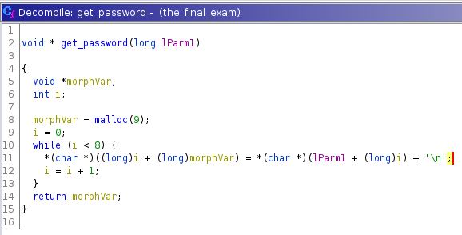
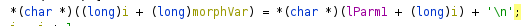
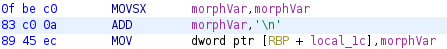

Ghidra is powerfull but sometimes it can misdirect a noob like me.
So I was doing this crack me challenge, it was pretty easy - of course now I know, but still, it would have been much easier if I have used our go-to for any reversing IDA. But me being me, decided that I should use Ghidra. I have just started to use this tool and honestly, I love the part where it spits C like pseudocode out of those assembly chunks, so I thought: "Okay, as this is relatively easy challenge (as marked on the website), we can just see what it does by pseudo C code in Ghidra and get done with it."
And I started with the usual thing, check the file type and section alignments blah blah... then with lots of hope fired up Ghidra and activated that dragon face (you know if you know), started going through all of it, cleaning up code and defining reasonable variables and then this :
  
Now WTF (what the fluctuation) is this? why we are trying to append or add '\n' to our string and even if we are doing it... how I am supposed to pass that from gets()? it will terminate the string at the first escape sequence!
I was actually not able to understand what it is trying to do, plus the assembly view also showed the same thing. So no help.
Good question. So after about 30 mins. It struck my small 15g brain that '\n' is actually equivalent to 0xA (when I was learning x86 assembly, we used this to create newline in std::out).
And you know what? 0xA in hexa = 10 decimal and yeah ... it was supposed to be easy... it was just adding 10 to our input and then comparing with the string hardcoded.
So I just made a python script to reverse this. subtract 10 from the hardcoded string
youdidit = oekZ_Z_j
And of course it worked. Ghidra just converted every hex to its ascii equivalent. I know this was minor and it was me being dumb, but hey! it doesn't hit you when you are doing it sometimes. And I accept the fact that the title might be overkill for this, but okay.